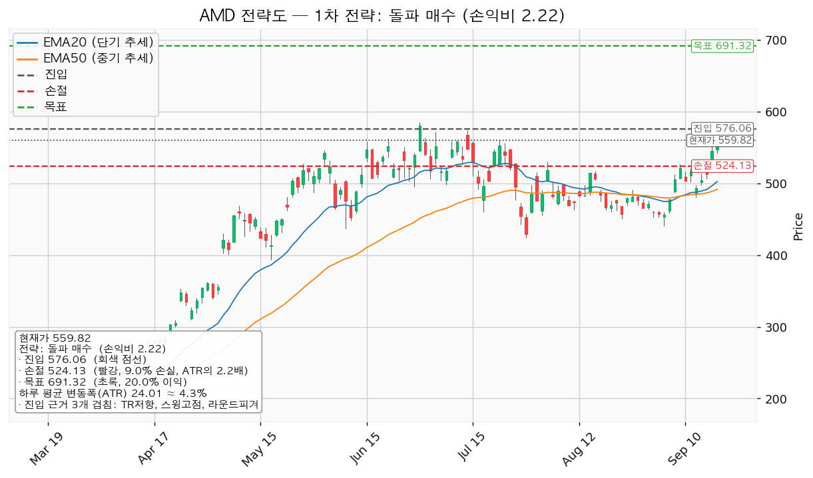
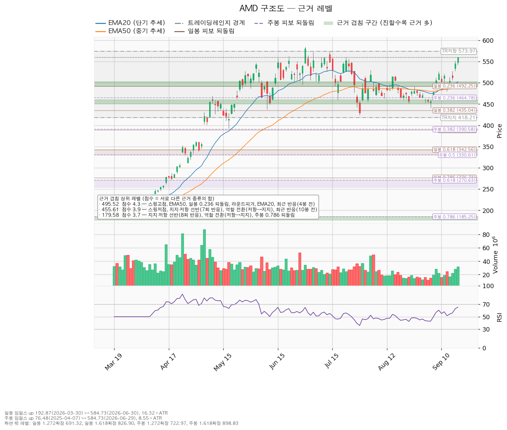
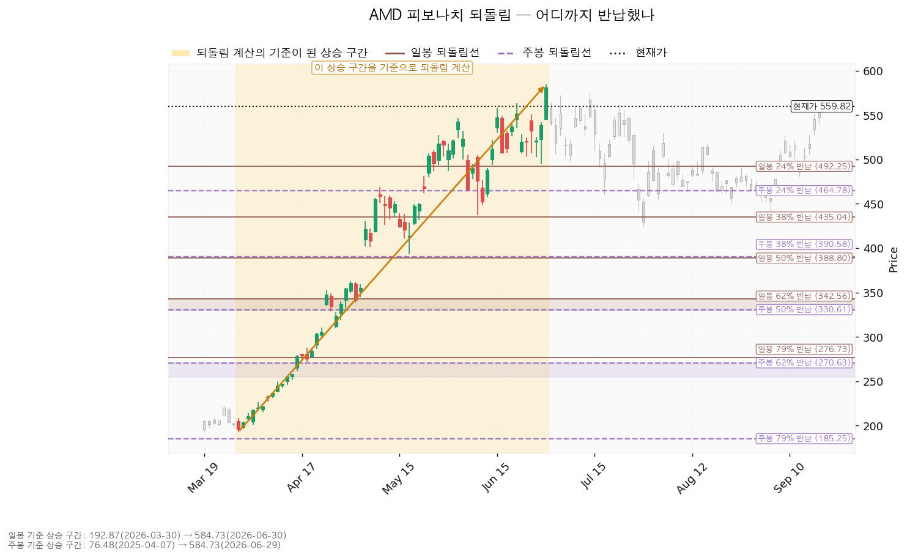
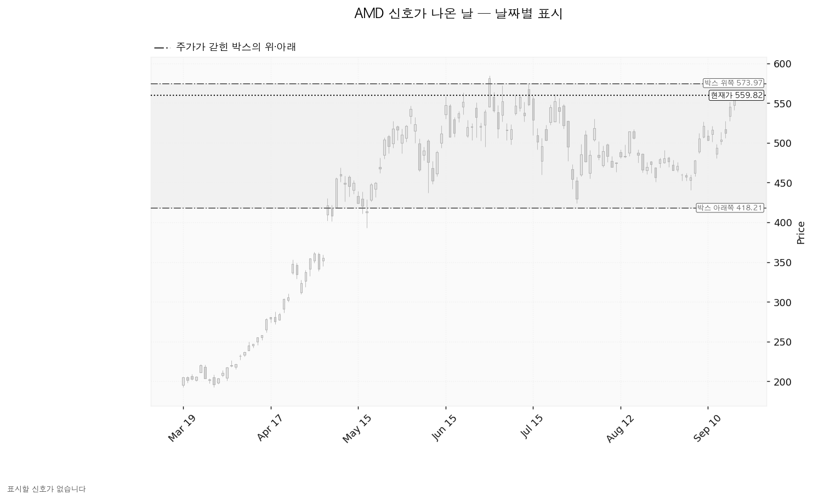

AMD(Advanced Micro Devices)는 PC·서버용 CPU와 데이터센터 GPU, 게임기용 반도체를 설계하는 미국 기업입니다.
| 구분 | 가격 | 판정 방식 | 현재 상태 |
|---|---|---|---|
| 회복선 | 495.52달러 (-11.5%) | 일봉 종가 회복 후 되돌림 지지 | 회복 완료 (스윙고점 + EMA50 + 일봉 0.236 되돌림, 겹침 4.3점) |
| 집행 손절 | 524.13달러 (-6.4%) | 저가 터치 | 진입(576.06달러 종가 돌파) 이후에만 유효 |
| 관망 종료 기준 | 491.12달러 (-12.3%) | 일봉 종가 이탈 | 유지 중 — 이탈하면 이 리포트의 매수 계획 종료, 새 리포트 대기(보유 중이면 보유분 유지) |
| 확인선 | 518.67달러 (-7.4%) | 일봉 종가 돌파 후 되돌림 지지 | 돌파 완료 (스윙고점 + 라운드피겨 + 최근 반응, 겹침 2.3점). 박스 상단 573.97달러는 그 위 맥락 |
| 폐기선 | 418.21달러 (-25.3%) | 이탈 후 3거래일 내 종가 회복 실패 + 반등에서 저항 확인 | 유지 중. 현재가에서 하루 평균 변동폭의 5.90배 아래라 실무상 무효화 기준으로 작동하지 않습니다 |
미진입 상태에서 실제로 볼 선은 491.12달러이며, 폐기선 418.21달러는 그보다 더 아래입니다.
| 항목 | 내용 |
|---|---|
| 이름 | 돌파 매수 (breakout_long) |
| 진입 | 576.06달러 일봉 종가 돌파 시 (+2.9%, 0.68 ATR 위) |
| 진입 근거 겹침 | 3.0점 — 박스 상단 저항 + 스윙고점 + 라운드피겨 (573.97~580.00달러) |
| 구조 증명도 | 돌파 확인형 (가중치 1.0) — 저항을 종가로 넘긴 뒤 들어가므로 진입가는 불리하나 구조가 먼저 증명됩니다 |
| 손절 | 524.13달러 / 손절 근거: 겹침 구간(530.13~540.00달러, 2.3점) 바로 아래 |
| 목표 | T1 600.00달러 (50% 청산) → T2 691.32달러 (잔량 청산, 일봉 1.272 확장) |
| 손익비 | 1:2.22 (T2 기준, 손절 폭 2.16 ATR) / 전 구간 혼합 1:1.34 / T1 후 본전 스탑 하한 1:0.23 |
| 엣지 | 모멘텀 — 저항을 돌파하면 그 방향이 이어진다는 전제. 자주 틀리고 소수가 크게 맞는 유형(이 유형의 일반적 성격이며 측정값이 아닙니다) |
| 비중 | 계좌의 11.1% (1회 위험 한도 계좌의 1%, 주당 위험 51.93달러) |
T1 600.00달러에서 절반을 청산하고 잔여분 손절을 진입가 576.06달러로 올립니다. 그 이후 목표는 691.32달러 전량 청산이며 트레일링은 걸지 않습니다. 진입 근거는 모멘텀이지만 집행은 레인지 규칙을 따르므로, 691.32달러 위 구간은 이 포지션의 연장이 아니라 새 셋업으로 다시 잡습니다.
대표로 고른 이유는 손익비 2.22 × 구조 증명도(돌파 확인형) × 근거 겹침 3.0점입니다. 다른 후보인 535.07달러 되돌림 매수는 손익비 1:1.73(T1 561.47달러·T2 576.06달러 절반씩, 전 구간 혼합 1:1.42, T1 후 본전 스탑 하한 1:0.56)이지만 구조 증명도가 선취형(구조 미확인, 가중치 0.7)이고 비중이 계좌의 22.6%로 상한을 넘으므로 이번 계획으로 내지 않습니다.
확인선 518.67달러는 이미 넘어선 상태이고 목표와는 다른 가격이므로, 이번 셋업에서 확인선과 목표가 충돌하는 문제는 없습니다.
구조적 손절(1.5 ATR) 기준 손익비는 이번 산출물에 포함되지 않았습니다. 다만 이 셋업의 손절 폭은 2.16 ATR로 그 기준보다 넓어, 손익비가 손절을 하루 변동폭 안으로 조여서 나온 값은 아닙니다.

| 단계 | 트리거 | 의미 | 행동 |
|---|---|---|---|
| 1 관찰 | 일봉 종가가 576.06달러 아래로 마감 | 구조 이탈 시작 — 되돌아 올라오면 속임수 하락일 수 있어 아직 무효가 아닙니다 | 신규 진입만 중단. 집행 손절 524.13달러는 그대로 둡니다 |
| 2 경고 | 이탈 후 3거래일 안에 576.06달러를 종가로 회복하지 못함, 또는 그 전에 일봉 종가가 552.05달러 아래로 마감 — 둘 중 먼저 오는 쪽 | 박스 안으로 되돌아갈 가능성이 우세해짐 | 잔여 비중 축소. 반등이 나오면 576.06달러에서의 반응을 확인합니다 |
| 3 무효 | 반등이 576.06달러에서 막히고 그 아래로 되밀림 | 셋업 폐기 — 구조 해석이 틀린 것으로 확정 | 포지션 정리 후 새 구조가 만들어질 때까지 관망 |
집행 손절 524.13달러는 구조가 몇 단계에 있든 무관하게 저가가 닿으면 작동합니다. 장중 일시 이탈은 어느 단계에도 해당하지 않습니다.
폐기선 418.21달러는 현재가에서 하루 평균 변동폭의 5.90배 아래라 실무상 무효화 기준이 되지 못합니다. 가격 대신 실적으로 거는 무효화 조건은 2026-11-04 실적이며, 그 자리에서 내년 EPS 컨센서스 15.57달러가 하향으로 돌아서거나 데이터센터 매출 가이던스가 낮아지면 이 리포트의 상승 논지를 접습니다.
상승 전환 — 576.06달러를 일봉 종가로 넘기고 되돌림에서 지지되면 박스 상단 돌파가 확정됩니다. 그때 진입해 600.00달러에서 절반, 691.32달러에서 잔량을 청산합니다.
횡보 지속 — 418.21달러를 지키며 박스 안에서 매물을 소화하는 국면입니다. 구조는 유지되며 부정적 신호가 아닙니다. 신규 진입은 보류하고 박스 안쪽 관측치를 추적합니다 — 지지 테스트 거래량은 줄어드는 중(1.21 → 1.17 → 1.17 → 0.83배), 저점은 절상되지 않고 평탄, 상승봉 대 하락봉 거래량비 1.06. 이 셋 중 저점 절상과 거래량비 개선이 나오면 매집 쪽으로 기울고, 지지 테스트 거래량이 다시 늘면 반대입니다.
시나리오 폐기 — 418.21달러를 이탈한 뒤 3거래일 안에 종가로 회복하지 못하고(또는 그 전에 394.20달러 아래 종가 마감) 반등이 418.21달러에서 막히면, 재축적이 아니라 재분산으로 보고 포지션을 정리한 뒤 새 레인지가 만들어질 때까지 관망합니다.
| 가격 | 겹침 점수 | 근거 | 최근 반응 |
|---|---|---|---|
| 576.06달러 | 3.0 | 박스 상단 + 스윙고점 + 라운드피겨 | — |
| 535.07달러 | 2.3 | 스윙고점 + 라운드피겨 | 7봉 전 |
| 518.67달러 | 2.3 | 스윙고점 + 라운드피겨 | 7봉 전 |
| 495.52달러 | 4.3 | 스윙고점 + EMA50 + EMA20 + 일봉 0.236 되돌림 + 라운드피겨 | 4봉 전 |
| 463.99달러 | 3.2 | 스윙저점 + 주봉 0.236 되돌림 | 27봉 전 |
| 455.61달러 | 3.9 | 지지·저항 선반(7회 반응) + 역할 전환(저항→지지) + 스윙저점 | 10봉 전 |
| 421.12달러 | 2.9 | 박스 하단 + 스윙저점 | 36봉 전 |
박스는 753개 일봉 중 최근 90봉으로 판정했습니다(가격이 안에 머문 비율 0.978, 방향 쏠림 0.006). 40봉 창도 유효했지만 쏠림이 0.221로 컸고, 180봉 창은 쏠림 0.75로 박스로 보기 어려워 90봉이 선택됐습니다. 직전 구간은 189.32~293.49달러 박스였고 가격이 그 위로 돌파해 이 박스로 올라왔습니다. 위에서 내려온 것이 아니라 아래에서 올라온 박스이므로, 여기서 다시 매물을 받아 올라가는 구간인지 물량을 넘기는 구간인지가 아직 갈리지 않았습니다. 박스 안쪽 판정은 중립입니다 — 지지 테스트마다 매도 거래량이 줄어든 점은 매집 쪽이지만, 저점이 절상되지 않고 상승봉 대 하락봉 거래량비도 1.06으로 균형에 가깝습니다. 박스 모양만으로 매집이라고 쓸 수 없는 상태입니다.

일봉 되돌림은 192.87달러(2026-03-30) → 584.73달러(2026-06-30) 상승 구간을 기준으로 계산됐습니다. 9월 3일 저점 440.5달러는 0.382 되돌림(435.04달러) 바로 위였고, 현재가 559.82달러는 0.236 되돌림(492.25달러)을 회복한 자리입니다. 주봉은 76.48달러(2025-04-07) → 584.73달러 구간이며 0.236 되돌림이 464.78달러입니다. 위쪽 확장 목표는 일봉 1.272 확장 691.32달러, 주봉 1.272 확장 722.97달러입니다.

날짜가 붙은 신호는 이번 조회 구간에서 하나도 산출되지 않았습니다 — 속임수 하락(spring), 상승 신호(SOS), 상단 속임수(upthrust), 약세 신호(SOW) 중 어느 것도 잡히지 않았습니다. 국면 후보는 상승 진행(markup)이며 근거는 EMA 정배열과 양의 기울기입니다. 이벤트 없이 추세와 이동평균만으로 나온 후보라는 점을 감안해 읽어야 합니다.

후행 PER 142.81배, 선행 PER 35.95배입니다. 후행 EPS 3.92달러가 올해 7.58달러(+81.7%), 내년 15.57달러(+105.5%)로 늘어나는 구간이라 두 배수가 크게 벌어졌습니다. 후행 배수만 보고 비싸다고 적을 수 없는 상태입니다.
목표주가는 애널리스트 50명 평균 616.51달러, 최저 365.00달러, 최고 1,250.00달러입니다. 현재가 559.82달러는 평균 아래, 최저 목표 위에 있습니다. 추천등급은 강력매수입니다.
6월 30일 고점 584.73달러에서 9월 3일 440.50달러까지 -24.7% 눌리는 동안 내년 EPS 컨센서스는 90일간 +18.8% 올라갔습니다. 이익 추정치가 오르는데 가격이 빠진 것이므로 배수 수축이며 사업 악화의 근거는 없습니다. 다만 최근 30일 상향은 +1.5%로 속도가 줄었습니다(올해분은 90일 +2.8% / 30일 +0.1%). 상향은 아직 진행 중이되 완만해졌으므로, 확인 항목은 2026-11-04 실적입니다.
현금흐름은 적자가 아닙니다. 2025-12-31 결산 기준 영업현금흐름 +77.1억달러, 잉여현금흐름 +67.4억달러이고 설비투자는 9.74억달러로 전년 6.36억달러 대비 +53.1% 늘었습니다. 투자가 늘었지만 영업에서 그보다 많은 현금이 들어오는 구조입니다.
평균 목표 616.51달러는 내년 EPS 15.57달러 기준 39.6배로, 현재 선행 35.95배 대비 +10.2%입니다. 컨센서스 상승 여력 +10.1%는 전부 배수 확장분이며, 이익 증가분은 이미 현재 가격이 선행 EPS로 쓰고 있습니다. 이익으로 더 밀어 올리려면 내년 EPS 컨센서스 자체가 15.57달러 위로 더 올라가야 합니다.
| 날짜 | 이벤트 | 볼 것 |
|---|---|---|
| 2026-11-04 | 3분기 실적 | 내년 EPS 컨센서스 15.57달러의 상향 지속 여부, 데이터센터 매출 가이던스 |
다음 실적 이후 구간(2027년 상반기)에 예정된 비용·일회성 항목은 이번 조회 자료에 없어 적지 않습니다.
진입 조건이 충족되면 계좌의 11.1%를 싣습니다(1회 위험 한도 계좌의 1%, 주당 위험 51.93달러). 13% 상한에는 걸리지 않습니다. 하루 평균 변동폭은 주가의 4.29%로 8% 기준 아래이고 손절 폭은 그 2.16배이므로, 논지와 무관한 일상적 흔들림에 손절이 닿을 위험은 낮습니다. 기본 시계는 수 주이고 컨센서스는 12개월 기준이라 층위가 다릅니다.
현재가 559.82달러에서는 진입 조건이 충족되지 않았으므로 대기입니다. 576.06달러 일봉 종가 돌파 시 손익비 1:2.22로 진입하고, 491.12달러를 종가로 잃으면 이 계획을 접고 새 리포트를 기다립니다.
용어: ATR = 하루 평균 변동폭. EMA = 지수이동평균(최근 가격에 가중치를 둔 이동평균선). RSI = 상대강도지수(0~100, 현재 65.4). EPS = 주당순이익. PER = 주가수익비율. T1·T2 = 1차·2차 목표.